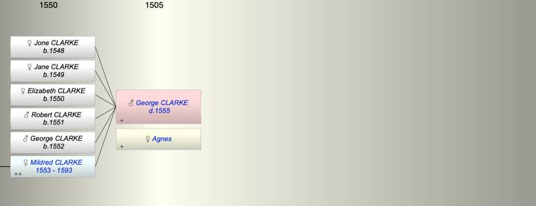

| [Index] |
| George CLARKE ( - 1555) |
|  |
| +. Agnes |
| d. 1555 |
| Children (6): |
| Jone CLARKE (1548 - ) |
| Jane CLARKE (1549 - ) |
| Elizabeth CLARKE (1550 - ) |
| Robert CLARKE (1551 - ) |
| George CLARKE (1552 - ) |
| Mildred CLARKE (1553 - 1593) |
| Grandchildren (4): |
| WIlliam CURLING (1587 - ), Alice CURLING (1589 - ), Ann CURLING (1590 - ), John CURLING (1592 - 1640) |
| Events in George CLARKE ( - 1555)'s life | |||||
| Date | Age | Event | Place | Notes | Src |
| 1548 | Birth of daughter Jone CLARKE | Offham, Kent | bap 10 June 1584 Offham ex FS | ||
| 1549 | Birth of daughter Jane CLARKE | Offham, Kent | bap 15 Nov 1549 Offham ex FS | ||
| 1550 | Birth of daughter Elizabeth CLARKE | Offham, Kent | Note 1 | ||
| 1551 | Birth of son Robert CLARKE | Offham, Kent | bap 22 Oct 1551 Offham ex FS | ||
| 1552 | Birth of son George CLARKE | Offham, Kent | Note 2 | ||
| 1553 | Birth of daughter Mildred CLARKE | Offham, Kent | bap 1 Oct 1553 Offham ex FS | ||
| 1555 | George CLARKE died | ||||
| Note 1: baptised Offham 24 Oct 1550 ex FS |
| Note 2: bap Offham 3 Jul 1552 Offham ex FS |
| Personal Notes: |
|
George Clarke – Will summary
DRb/Pwr/11.327 DRb/Pw/5 (see http://vulpeculox.net/history/willsc.htm) will made 23rd Feb 1555 proved May 1555 George Clarke of Offham to wife Agnes the lease of Offham and Snodbyn [can’t find a place approximating to this name and spelling changes in this document] for the period of 20 years after which son Robert is to have the years remaining in the lease. If Robert dies before the end of the 20 years then the lease is to go to his daughters. If all his children die before the period of 20 years is up Agnes his wife is to have the whole lease remaining. to mother land at the gate at Snodbyn and Banbrokefield, mother to pay his wife £10 during the term of the lease of 20 years. If mother dies during the term of the lease, then wife to have this land for the remainder of the 20 years. to brother Richard Clarke, the south pound and the croft around it and Sowithfede [Southfield??] in Snodbynn for 20 years, paying George’s wife 20s a year. to each of his daughters Johan[na?], Jane and Myldredd, 20s on day of marriage. If one dies before marriage, her share to be divided equally between the other two and if only one reaches marriage she is to have the whole sum. If they all die before marriage, son Robert to have the whole sum. wife Agnes is to be sole executrix. brother Richard Clarke and brother-in-law John Stary to be overseers to servant Ford 10s to John Palmer and Richard Palmer 12s each to son Robert and his heirs all land. If Robert has no heirs the land to go to George’s ‘heirs general’. Witnesses: Richard Kydd, William Pilfett, John Palmer, Robert Feryby, Richard Palmer The following baptisms were at Offham, ex FS, parents not given but as we know Mildred’s father was George we assume all were children of George: Jone Clarke 10 June 1548 Jane Clarke 15 Nov 1549 Elizabeth Clarke 24 Oct 1550 Robert Clarke 22 Oct 1551 George Clarke 3 Jul 1552 Mildred Clarke 1 Oct 1553 |
| Created on a Mac™ using iFamily for Mac™ on 8 Oct 2023 |